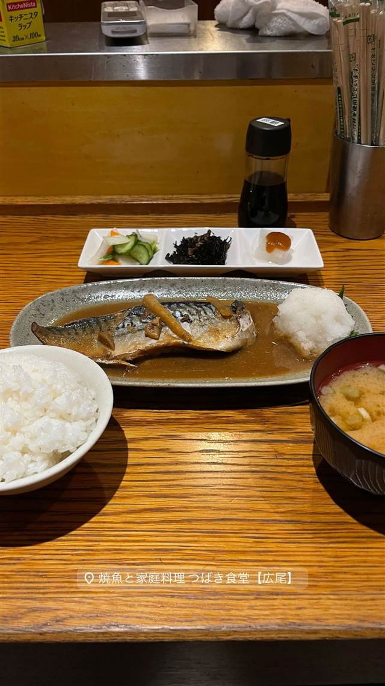

焼魚と家庭料理 つばき食堂
焼魚と家庭料理 つばさ食堂【広尾】
REVIEWS
世間の評判
3.42食べログ
焼き魚定食とご飯みそ汁おかわり自由
- 脂ののった焼き魚とかつお香る味噌汁の美味しさを評価する声が多い
- ご飯と味噌汁がおかわり自由で値段以上の満足感があるという声が多い
- カウンター席の幅がやや狭いと感じる人もいるという声が一部ある
Retty
| どこから | 都心 |
|---|---|
| 営業時間 | 月〜日 11:00-16:00、16:00-23:00 |
| 予算 | 昼 ¥1,000～¥1,999 夜 ¥4,000～¥4,999 |
| 場所 | 広尾 東京都渋谷区広尾 |
食べたもの：焼魚定食
NEARBY
近い店・同じ系統の店
-
 イタリアン 広尾駅
ラ・ビスボッチャ（LA BISBOCCIA）
イタリア政府公認、手長海老のパッパルデッレなど郷土料理
夜 ¥20,000～¥29,999
イタリアン 広尾駅
ラ・ビスボッチャ（LA BISBOCCIA）
イタリア政府公認、手長海老のパッパルデッレなど郷土料理
夜 ¥20,000～¥29,999
-
 ピザ 広尾駅
the pizza tokyo
1枚焼きのニューヨークピザを1切れ600円台でスライス売り
夜 ¥1,000～¥1,999
ピザ 広尾駅
the pizza tokyo
1枚焼きのニューヨークピザを1切れ600円台でスライス売り
夜 ¥1,000～¥1,999
-
 ブランチ 広尾
ボンダイカフェ（BONDI CAFE）広尾本店
シドニーのビーチに憧れて生まれたとろとろエッグベネディクト
昼 ¥1,000～¥1,999 夜 ¥2,000～¥2,999
ブランチ 広尾
ボンダイカフェ（BONDI CAFE）広尾本店
シドニーのビーチに憧れて生まれたとろとろエッグベネディクト
昼 ¥1,000～¥1,999 夜 ¥2,000～¥2,999
-
 カフェ 広尾駅
3cafe（広尾）
アンティーク家具とピアノを配した昭和レトロな空間
昼 ¥1,000～¥1,999
カフェ 広尾駅
3cafe（広尾）
アンティーク家具とピアノを配した昭和レトロな空間
昼 ¥1,000～¥1,999
-
 カレー 広尾
広尾のカレー
牛テールと牛骨を6時間煮込んだルーの牛テールカレー
昼 ¥1,000～¥1,999 夜 ¥1,000～¥1,999
カレー 広尾
広尾のカレー
牛テールと牛骨を6時間煮込んだルーの牛テールカレー
昼 ¥1,000～¥1,999 夜 ¥1,000～¥1,999
-
 アイス・ジェラート 広尾
MELTING IN THE MOUTH
世界初の形のソフトクリームを作るため専用機械を独自開発した
アイス・ジェラート 広尾
MELTING IN THE MOUTH
世界初の形のソフトクリームを作るため専用機械を独自開発した